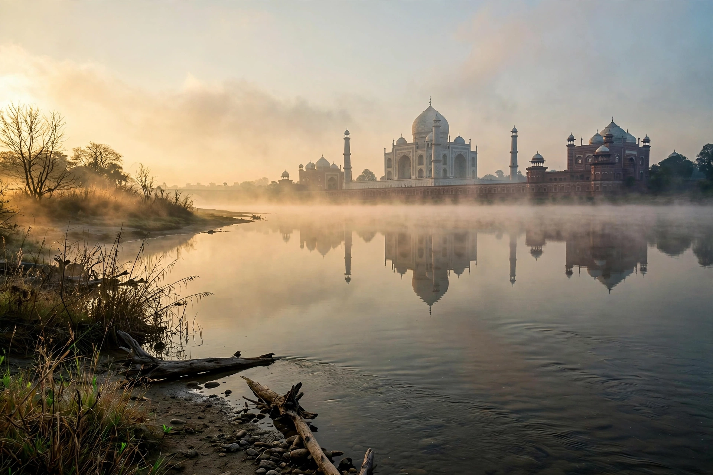

Wikipedia — the free encyclopedia
| Location | Northern India |
| Length | About 1,376 km |
| Source | Yamunotri Glacier, Uttarakhand |
| Mouth | Ganges at Prayagraj |

The Yamuna is the second-largest tributary of the Ganges and the longest tributary in India, flowing about 1,376 kilometres from the Yamunotri Glacier in the Himalayas of Uttarakhand, past Delhi, Mathura and Agra, to join the Ganges at the Triveni Sangam in Prayagraj. It is one of the most sacred rivers in Hinduism, personified as the goddess Yamuna and associated with the legends of Krishna, whose childhood home lay along its banks at Mathura and Vrindavan.
Its principal tributaries include the Chambal, Betwa, Ken and Sindh from the south, and the Tons — which carries more water than the Yamuna's own headstream — from the Himalayas.
Delhi and Agra both stand on the Yamuna; the Taj Mahal was built on its southern bank. Despite its sacred status the river is severely polluted along the Delhi stretch, where a short segment receives most of the capital's wastewater while contributing only a small share of the river's flow — a widely cited environmental statistic whose exact percentages vary by report. Seasonal flooding affects low-lying parts of Delhi in strong monsoon years.